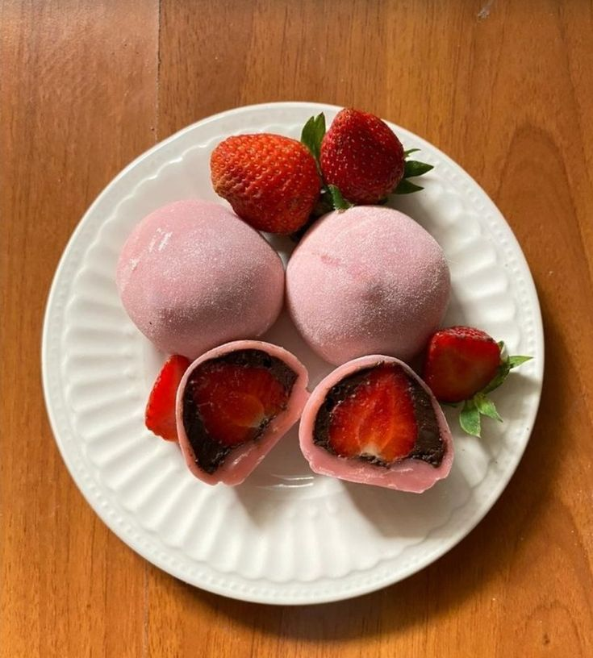

Ingredients
- 1 cup mochiko (sweet rice flour)
- 1/4 cup sugar
- 3/4 cup water
- Potato starch (for dusting)
- Filling options: red bean paste, fresh fruit, or ice cream
Instructions
- In a microwave-safe bowl, mix the mochiko, sugar, and water until smooth.
- Cover the bowl with plastic wrap and microwave for 1 minute. Stir, then microwave for another minute, and stir again. Microwave for a final 30 seconds until the mixture is thick and sticky.
- Dust a clean surface with potato starch. Transfer the mochi dough onto the surface and let it cool slightly.
- Divide the dough into small pieces and flatten each piece into a circle.
- Place your desired filling in the center and carefully fold the edges over to seal. Roll into a ball.
- Dust with additional potato starch to prevent sticking.
- Serve immediately or store in an airtight container for up to a day. Enjoy your delicious Daifuku Mochi!